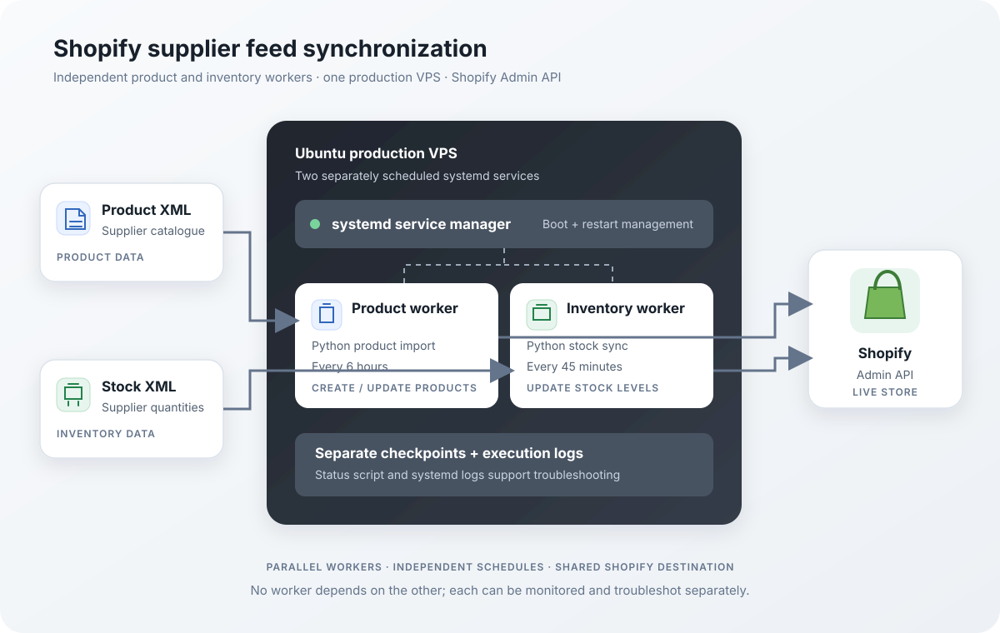

Building a reliable Shopify supplier feed integration
How I built and deployed an automated supplier integration for Shopify, with separate product and inventory workers, feed safeguards, and scheduled VPS services.
Keeping a Shopify catalogue aligned with an external supplier is not just a matter of importing an XML file. A production integration needs to identify products correctly, handle changing stock levels, protect the live store from abnormal feed data, and keep running without someone manually starting scripts.
For this project, I built and deployed a Python-based synchronization system that reads separate supplier XML feeds for product data and inventory, then updates a live Shopify store through the Shopify Admin API.
The objective was to turn a manual or developer-dependent process into an automated service that could run reliably in the background.
The requirements
The supplier provided two separate XML feeds: one containing product information and another containing stock quantities. The integration needed to:
- Import new products and update existing Shopify products.
- Match supplier records to Shopify products using SKU values.
- Synchronize stock quantities against the correct Shopify inventory location.
- Run product and inventory synchronization independently.
- Avoid unnecessary updates when product data had not changed.
- Detect suspicious or incomplete feed data before it could affect the live catalogue.
- Keep execution history and progress available for troubleshooting.
- Run automatically after deployment and server restarts.
The main engineering challenge was making the complete workflow safe to repeat, not simply making one successful import.
System architecture
I separated the integration into two independent Python workers. Both run on an Ubuntu VPS and are managed by systemd, while communicating with Shopify through its Admin API.

The product worker is responsible for catalogue data. The inventory worker is responsible for stock quantities. Each has its own schedule, checkpoint, and execution logs.
This separation keeps frequent stock checks from triggering unnecessary product imports and makes each process easier to inspect independently.
Product synchronization
The product worker downloads and parses the supplier product feed, then compares the incoming records with the existing Shopify catalogue.
Products are matched using their SKU values. The import process distinguishes between new products, products that need updating, and products that are already up to date.
Where changes are required, the worker sends updates to Shopify in batches rather than treating every product as an isolated request.
The initial production import processed 3,473 feed items. It identified 39 new products and 2,286 existing products requiring updates, while 1,148 products were unchanged. All 2,325 create/update operations completed successfully.
The workflow also includes publication handling and verification, so products that need to be available on the Online Store publication can be checked as part of the process.
Inventory synchronization
Inventory is handled by a separate worker because stock availability can change more frequently than product descriptions or other catalogue information.
The inventory worker reads the supplier stock feed, matches records to Shopify using the SKU, and synchronizes the supplier's available quantity with the configured Shopify location.
The process uses the supplier's current quantity as the source of truth. It does not repeatedly add or subtract stock based on the previous synchronization run. This makes repeated runs predictable and helps prevent quantity drift.
The initial inventory run successfully processed all 3,473 readable SKU records, with zero failed updates.
Why the workers use different schedules
The production schedule is intentionally different for each process:
- Product synchronization: every 6 hours.
- Inventory synchronization: every 45 minutes.
Product information generally does not need to be checked as frequently as stock availability. A six-hour product interval keeps the catalogue refreshed without running the full import too often.
For inventory, I chose 45 minutes rather than 30. A shorter interval is not automatically better: it also means more frequent feed downloads and API activity. Forty-five minutes provides regular stock checks while keeping unnecessary workload under control.
Both intervals are configured independently, so they can be adjusted if the supplier's update frequency or the store's requirements change.
Safeguards for production data
A synchronization system connected to a live store needs protection against unexpected supplier data.
I added validation safeguards to detect suspicious changes before the workers proceed. These include thresholds for unexpected feed shrinkage, unknown stock records, and unusually large zero-stock changes, along with a minimum item-count check.
The purpose is to avoid treating a partial or abnormal supplier feed as a trustworthy representation of the full catalogue.
The system also keeps configuration and credentials outside the source code. Production environment values are stored in a protected environment file and are not committed to the repository.
Deploying the workers with systemd
After testing the scripts, I deployed them to an Ubuntu VPS and configured two independent systemd services:
shopify-products-scheduler.serviceshopify-inventory-scheduler.service
Systemd keeps the schedulers running in the background, starts them automatically when the server boots, and provides a standard way to inspect their status and logs.
This means the synchronization does not depend on an open terminal session or a developer keeping a process alive manually.
The VPS is the single source of automatic production scheduling. GitHub is used for source-code management, while the production workers execute on the server. This avoids accidentally running duplicate scheduled jobs from multiple platforms.
Monitoring and troubleshooting
Each worker maintains its own checkpoint and execution logs. I also added a status script that summarizes service health, the latest successful runs, the publication queue, and recent problems.
For example, the product scheduler's recent service output can be inspected with:
sudo journalctl -u shopify-products-scheduler -n 30 --no-pagerThe inventory scheduler can be inspected separately:
sudo journalctl -u shopify-inventory-scheduler -n 30 --no-pagerThis separation makes it easier to identify whether an issue belongs to product import, inventory synchronization, or the scheduler itself.
Production verification
After deployment, I verified both the initial manual production runs and the first automatic runs triggered by the services.
The initial production checks confirmed:
- 3,473 supplier product-feed items processed.
- 2,325 product create/update operations completed successfully.
- 3,473 inventory SKU records processed successfully.
- Zero failed operations in the initial product and inventory runs.
The first automatic product run then completed with 2,296 successful updates and 1,177 unchanged products. The first automatic inventory run also completed successfully.
Both systemd services were active, the publication queue was empty after the product run, and the final health check reported the deployment as healthy.
What this project demonstrates
The most important part of this project was not the XML parsing or the API requests on their own. It was designing the complete synchronization lifecycle: separating responsibilities, matching records reliably, validating incoming data, processing changes in batches, saving progress, and operating the workers as managed production services.
The result is a supplier integration that runs automatically, keeps product and inventory workflows independent, and provides checkpoints and logs for ongoing monitoring.
The goal was to keep the Shopify catalogue and inventory aligned with supplier data without requiring someone to run the synchronization manually.